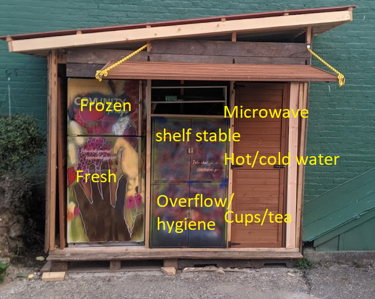

We are excited to announce the Covington Community Fridge, aka the COVUNITY Fridge, at Redden Gardens! Food Insecurity is a real problem in our community so we are building a free fridge and pantry that our neighbors can access 24/7.
Shelf stable, store-bought items and fresh produce can be directly shared in the fridge at any time, on the alley north of 909 Scott in Covington, KY.
Here's a diagram of where things can be found in the CovUnity Fridge & Pantry. There are usually fresh, frozen, and shelf-stable items, as well as hot and cold water, snacks and bottled water. If you want more up-to-date info, please check the Facebook feed for current photos!
